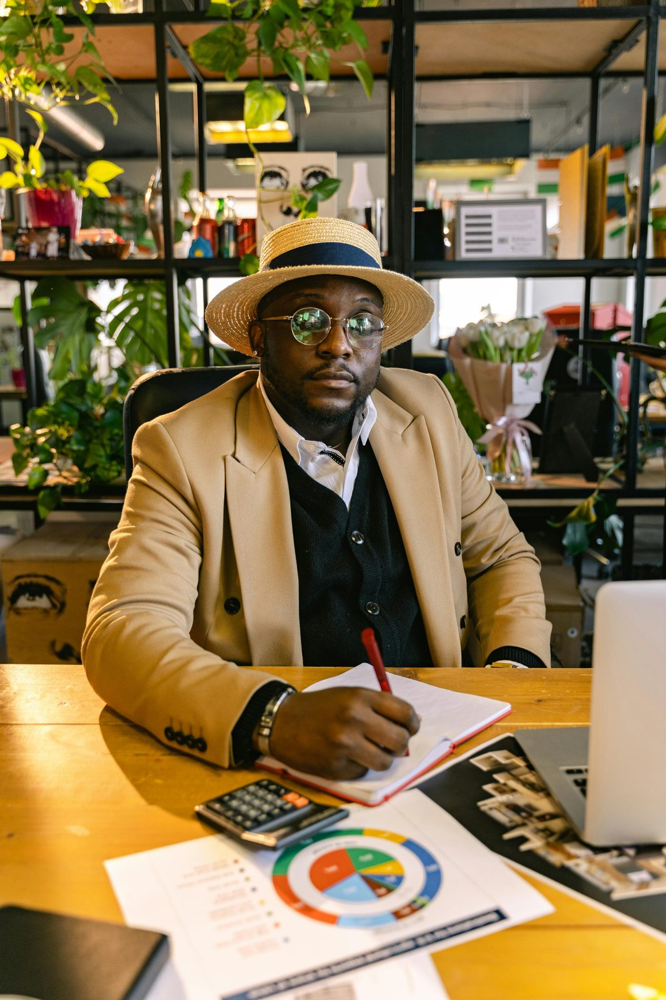
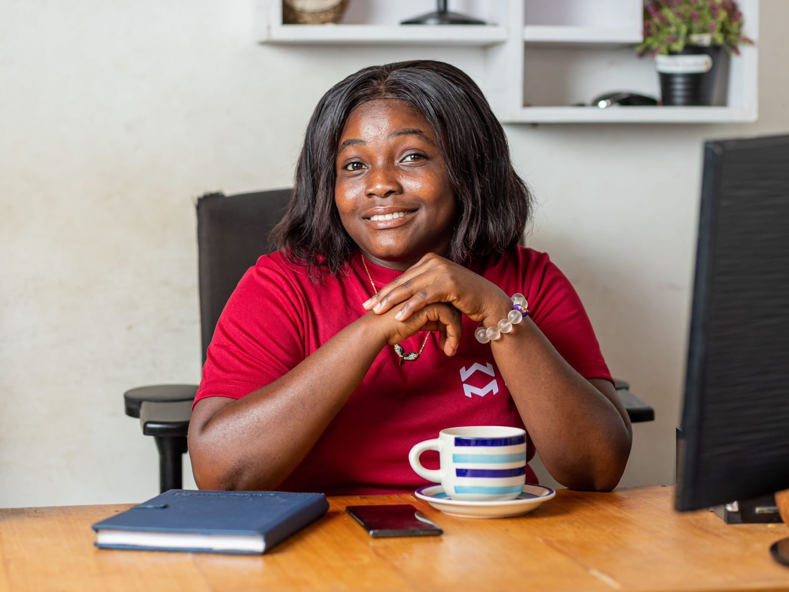
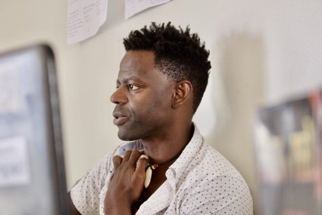
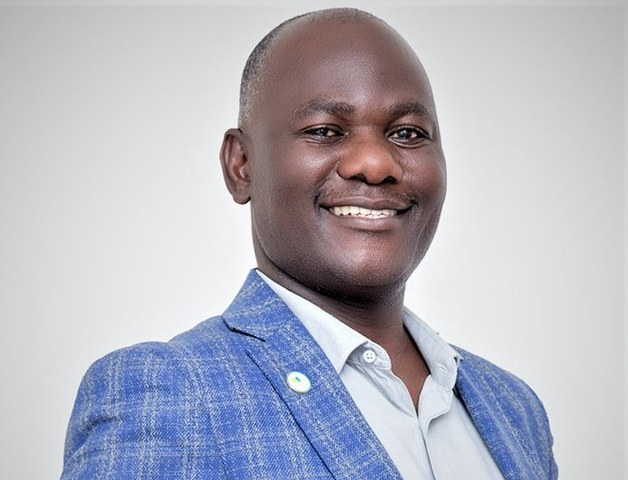
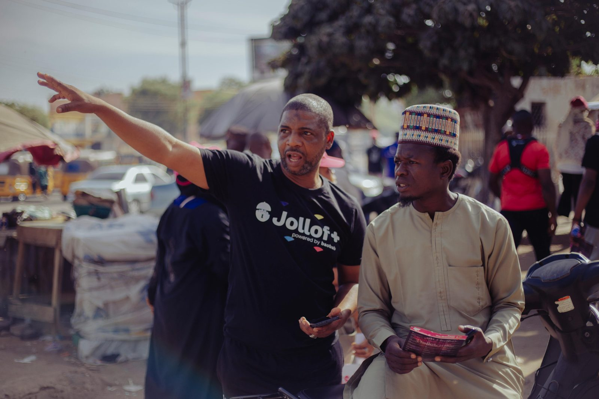

A proposal for Absa Bank Uganda
100 founding teams. Four cohorts in 2027. Three years of support after each one.
The Founder's Sprint · October 2026
Build with direction.
Uganda by the numbers
70,010
registered entities access bank credit today
437,000
entities needed to absorb the credit the Tenfold Growth Strategy calls for
Source: Wilbrod Owor, Executive Director, Uganda Bankers' Association; Bank of Uganda / Tenfold Growth Strategy. Gap = 437,000 − 70,010.
The implied pace of growth
00:00
06:00
12:00
18:00
72
bankable businesses
every day
26,000
a year, every year to 2040:
367,000 in all
The credit it takes
Shs30 trillion · the entire private-sector loan book today
About Shs33 trillion · new lending needed every year
Shs490 trillion · the private-sector credit target for 2040
Each year needs more new credit than the whole loan book holds today.
Source: Bank of Uganda / Tenfold Growth Strategy; UBA. Derived: 367,000 ÷ 14 years ÷ 365 days; (490 − 30) ÷ 14. Bars drawn to scale.
The survival problem
One in three never reaches its first birthday. Every loan made in those first five years is a loan made into the period when businesses are most likely to close.
After year one
1 in 3 closed
still trading
After year five
Nearly half closed
still trading
Source: UBOS figures reported by Enterprise Uganda. Bar lengths show the reported shares: one third, and just under half.
The shape of the business base
82%
of enterprises employ fewer than five people
49%
are one-person businesses
9%
of commercial credit goes to women, who own about 40% of businesses
<1 in 10
family businesses outlive their founder
Sources: UBOS Census of Business Establishments 2019/20 · World Bank/IFC, restated in World Bank GROW project (2022) · EPRC (December 2025).
Why this matters to Absa
Q1
YEAR 1
YEAR 2
YEAR 3
Sprint
36 months of advisory · one hour a month · milestones reported every month
A complete file Absa can assess: model, data room, governance plan
A coach every month, so repayment problems surface early
Monthly data Absa can see, with founder consent
ABSA × THE FOUNDER'S SPRINT
Part two
How 100 teams are recruited, taught and graduated in 2027.
ABSA × THE FOUNDER'S SPRINT
The programme at a glance
100
founding teams, up to three founders each
4 × 25
one cohort each quarter of 2027, taught in two groups
5
disciplines, five coaches, five signed-off deliverables per team
36
months of advisory per team, one hour a month
3,600
hours of one-to-one advisory across the programme
Monthly
business data on every team, reported to Absa
ABSA × THE FOUNDER'S SPRINT
The calendar
N
D
J
F
M
A
M
J
J
A
S
O
N
D
Cohort 1
R
O
T
T
T
A
A
A
A
A
A
A
A
A
Cohort 2
R
O
T
T
T
A
A
A
A
A
A
Cohort 3
R
O
T
T
T
A
A
A
Cohort 4
R
O
T
T
T
R Recruit
O Onboard
T Teach
A Advisory
Nov 2026 to Dec 2027. Advisory runs 36 months per cohort: to March 2030 for Cohort 1, December 2030 for Cohort 4.
Inside one cohort quarter
WEEKS 1–2
Readiness Check, intake, baseline numbers recorded as month zero
WEEKS 3–7
Five disciplines on five weekdays, two groups of 12–13 teams, about 50 hours of coaching per team
WEEKS 8–10
Deliverables finished and signed off; a credit clinic with Absa RMs
WEEKS 11–12
Founders present to Absa; graduation into advisory
Each team leaves with five signed-off deliverables: go-to-market strategy, a 36-month financial model, a pitch deck and fundraising plan, a competitive analysis and team plan, and a product roadmap with pricing.
ABSA × THE FOUNDER'S SPRINT
Recruitment and selection
A place carries no promise of credit. Lending decisions stay with Absa. Proposed for discussion: the mix across the three tracks, a target that at least 40% of teams are women-led, and places outside Kampala.
ABSA × THE FOUNDER'S SPRINT
Part three
Five disciplines, fifteen modules, forty-nine specialties.
ABSA × THE FOUNDER'S SPRINT
Curriculum design
ABSA × THE FOUNDER'S SPRINT
How the curriculum is organised
L1 · Discipline
5
What a cohort delivers in full. Each has one founding coach and one teaching day.
L2 · Module
15
A course within a discipline, such as Pitch Craft or Unit Economics. Three in each.
L3 · Specialty
49
The unit of coaching: one focused two-hour session on a single problem.
For example
Financial Modelling
Financial Planning
Cash Flow Management
Cohort teams cover all 49 during the Sprint. After graduation, each month's advisory hour goes to the specialty behind that month's problem.
ABSA × THE FOUNDER'S SPRINT
Part four
Capital, three years of advisory, and the milestones Absa sees.
ABSA × THE FOUNDER'S SPRINT
What we accelerate them toward
WEEK 12
Readiness Day
Complete file presented to Absa
WEEKS 12–16
Absa credit review
Absa's normal process, with a coach recommendation
MONTHS 4–12
First facility
Operating capital, put to work with a coach every month
YEARS 2–3
Step up
Repayments and monthly data support the next tier
UGX 5M
Stock, working capital, a first hire
Evidence: Sprint complete, data room signed off, Absa account open
UGX 10M
A second outlet, equipment, larger orders
Evidence: The 5M evidence, plus six months of bank statements above an agreed revenue level
UGX 25M
New markets, production capacity
Evidence: The 10M evidence, plus reviewed accounts and security under Absa policy
Illustrative tiers, for discussion. Amounts, terms and every approval are Absa's. Teams not yet ready leave with a plan for their gaps and a re-assessment at six months.
ABSA × THE FOUNDER'S SPRINT
Three years of advisory
Matched to the team's biggest gap at graduation. Any month's hour can go to a specialist coach instead.
The month's check-in is reviewed first, then one problem is worked through and the plan updated.
Model, plan and documents brought up to date once a year, ready for the next loan or raise.
Two missed check-ins or a cash warning brings a coach call within a week, and, with consent, a note to the RM.
ABSA × THE FOUNDER'S SPRINT
Milestone tracking
A five-minute check-in
Milestones reached
Outcomes
ABSA × THE FOUNDER'S SPRINT
What Absa receives
All 100 teams in aggregate: revenue, cash, jobs, credit
Milestones reached and the early-warning list
Survival, growth and jobs against the national baseline
Named, team-level data is shared only with that founder's written consent.
| Measure | Proposed target |
|---|---|
| Teams completing the Sprint | [90%] |
| Data rooms signed off | [90%] |
| Monthly check-ins returned | [80%] |
| Absa credit applications | [to agree] |
| Still trading at 36 months | Above national baseline |
| Revenue and jobs growth | [to agree] |
ABSA × THE FOUNDER'S SPRINT

Part five
Who delivers, what it costs, and how we start.
ABSA × THE FOUNDER'S SPRINT
Who delivers
250+
Ugandan businesses supported by our founding team, collectively
48
startups taken through a six-month cohort programme we have run before

TMS Ruge
Marketing & Branding
Barry Wojega
Financial Modelling
Joseph Kalema
Investment Readiness
Moses Engwau Okudu
Strategy & Team

Patrick Ngolobe
Product & Pricing
ABSA × THE FOUNDER'S SPRINT
The investment
Per team, either way
Sprint
2,500,000
36 months advisory
3,600,000
Admin (15%)
915,000
Total
7,015,000
Advisory at UGX 100,000 an hour, a volume rate. Admin covers recruitment, programme management, platform and reporting to Absa.
Option A
Absa, per team
3,415,000
Absa, 100 teams
341,500,000
Founders pay UGX 100,000 a month for 36 months, a condition of their place in the programme.
Absa invoiced, UGX million
2027
301
2028
18
2029
18
2030
4.5
Option B
Absa, per team
4,615,000
Absa, 100 teams
461,500,000
Founders pay UGX 100,000 a month from month 13, a condition of any Absa facility.
Absa invoiced, UGX million
2027
391
2028
48
2029
18
2030
4.5
In both options Absa carries the admin, since it pays for reporting to Absa, and founder fees are collected by monthly debit from the team's Absa account.
ABSA × THE FOUNDER'S SPRINT

Next steps
October
Agreement in principle and a signed letter of intent
November
RM briefing, Business Club launch, applications open
December
Joint selection panel; Cohort 1 onboarding
January 2027
Cohort 1 begins
TMS Ruge · teddy@founderssprint.co · founderssprint.co
Build with direction.